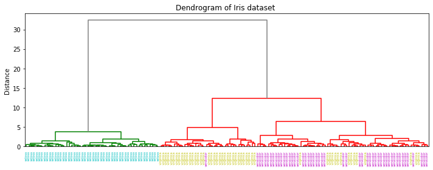

クラスター分析

現在、クラスター分析の勉強をしています。 勉強し始めて数時間ですが、少しまとめてみたいと思います。
クラスター分析とは
簡単に言うと、クラスター分析とは異なる性質のものが混ざり合った集団から互いに似た性質を持つものを集める方法のことです。 あらかじめ分類の基準が決まっておらず分類のための外的基準や評価が与えられていない「教師無しの分類法」です。
グループ分けの対象
サンプルを分類するのか、変数を分類するのか
分類の形式（種類、生成）
階層的方法か非階層的方法か
分類に用いる対象間の距離（類似度）
ユークリッド距離、マハラノビス距離、コサイン距離 ・・・
クラスターの合併方法（クラスター間の距離の測定方法）
ウォード法、群平均法、最短距離法、最長距離法・・・
クラスター分類するにはここら辺を決めなくてはいけません。 特に後ろ二つが馴染みがなく難しい。。。
デンドログラム
階層的クラスタリングを可視化する代表的な方法にデンドログラムがあります。Scikit-learnのirisデータセットで試しにやってみます。調べたところ、scikit-learnでデンドログラム描写はできないみたいだったので、Scipyからimportして使います。 （Scipyのクラスタリングアルゴリズムはscikit-learnのアルゴリズムを若干違うみたいです。） 上で書いた後ろ２つを以下で指定しています。
実装
import pandas as pd
from sklearn import datasets
from scipy.cluster.hierarchy import dendrogram, linkage
from matplotlib import pyplot as plt
iris = datasets.load_iris() # data load
df = pd.DataFrame(iris.data, columns=iris.feature_names)
# ウォード法 & ユークリッド距離
linkage_result = linkage(df, method='ward', metric='euclidean')
fig = plt.figure(figsize=(10, 4))
dn = dendrogram(linkage_result, labels=list(iris.target_names[iris.target]),
above_threshold_color="grey")
# 各ラベルに色を割り当て
label_colors = {'setosa': 'c', 'versicolor': 'm', 'virginica': 'y'}
ax = plt.gca()
xlbls = ax.get_xmajorticklabels()
for lbl in xlbls:
lbl.set_color(label_colors[lbl.get_text()])
plt.title("Dendrogram of Iris dataset ")
plt.ylabel("Distance")
plt.tight_layout()
plt.show()
結果
縦軸がクラスタ間距離です。横軸のラベルでは、setosaをシアン、versicolorをマゼンタ、virginicaを黄色としました。

setosaは綺麗に分かれますが、versicolorとvirginicaはうまく分けられていないのがわかります。なるほど。
イメージング画像でクラスタリングしたいなあとか思っているんですが、 なかなかサンプル数とか特徴量の問題で難しそう。
うまく特徴がつかめるような解析がしたいなあ。
頑張って勉強してみます。 何かいいサイトや参考資料があったら教えてください。